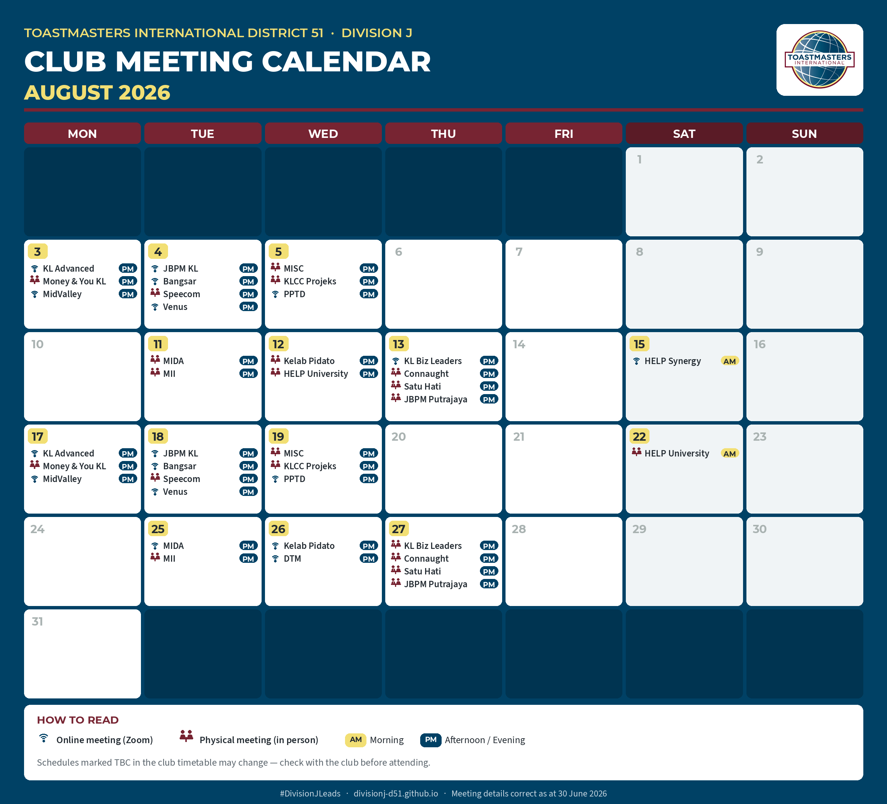

Club directory
Visit a Division J club — guests attend free.
No invitation needed. Pick a club below, show up, and introduce yourself as a guest. Most people visit two or three clubs before choosing one.
August 2026 club meeting calendar
Every Division J club's meeting day, time (AM/PM), and format for August — 📶 online via Zoom or 🧑🤝🧑 in person. Full contact details per club are below.

Area J1
Kuala Lumpur city clubs.
Kuala Lumpur Advanced Toastmasters Club
- 1st & 3rd Mondays, 7:30pm–9:30pm
- Online (Zoom)
- Find official listing
Kelab Pidato Toastmasters
- 2nd Wednesdays, 8pm–10pm · 4th Wednesdays, 8pm–10pm
- 2nd Wed: Berjaya Times Square Hotel · 4th Wed: Online (Zoom)
- Find official listing
KL Business Leaders Toastmasters Club
- 2nd Thursdays, 7:30pm–10:30pm · 4th Thursdays, 7:30pm–10:30pm
- 2nd Thu: Online (Zoom) · 4th Thu: Victory Centre, Bandar Utama
- Find official listing
MIDA Toastmasters Club
- 2nd & 4th Tuesdays, 12pm–2pm
- Online (Zoom) — occasional physical sessions at MIDA Sentral, confirm before attending
- Find official listing
JBPM Toastmasters Club of Kuala Lumpur
- 1st & 3rd Tuesdays, 9:30pm–10:30pm
- Online (Zoom)
- Find official listing
Area J2
Damansara, Bangsar & Klang Valley clubs.
HELP University TMC
- 2nd Wednesdays, 7pm–9pm · 4th Saturdays, 10am–12pm
- 2nd Wed: Wisma CL, HELP University Damansara campus · 4th Sat: HELP University, Subang Bistari campus
- Find official listing
HELP Synergy TMC
- 3rd Saturdays, 8:30am–10am (TBC — confirm before attending)
- Online (Zoom)
- Find official listing
Bangsar TMC
- 1st & 3rd Tuesdays, 7:30pm (TBC — confirm before attending)
- Online (Zoom)
- Find official listing
Speecom
- 1st & 3rd Tuesdays, 8pm–10pm
- Sound of Soul Center, Bandar Sri Damansara, Kuala Lumpur
- Find official listing
Connaught TMC
- 1st & 3rd Thursdays, 7:30pm
- Life Tree Cafe, Level 12, Block G, UCSI University, Kuala Lumpur
- Find official listing
Area J3
Bukit Jalil, Sri Petaling & KLCC clubs.
MII Toastmasters Club
- 2nd & 4th Tuesdays, 7:30pm
- Aked Esplanade, Taman Bukit Jalil, Kuala Lumpur
- Find official listing
Satu Hati Club
- 2nd & 4th Thursdays, 7:30pm
- Drs. Wong & Partners Dental Centre, Taman Sri Endah, Bandar Baru Sri Petaling
- Find official listing
Money & You Kuala Lumpur Toastmasters
- 1st & 3rd Mondays, 7:45pm
- Commercial Circle Sdn Bhd, Old Klang Road, Kuala Lumpur
- Find official listing
MISC Toastmasters Club
- 1st & 3rd Wednesdays, 1pm
- MISC Berhad, Level 17, Menara Dayabumi, Kuala Lumpur
- Find official listing
KLCC Projeks Toastmasters Club
- 1st & 3rd Wednesdays, 12 noon
- Level 32, Menara Dayabumi, Kuala Lumpur
- Find official listing
Area J4
Mid Valley & Putrajaya clubs.
Venus Toastmasters Club
- 1st & 3rd Tuesdays, 8pm
- Online (Zoom)
- Find official listing
MidValley Toastmasters Club
- 1st & 3rd Mondays, 8pm–9pm
- Online (Zoom)
- Find official listing
DTM Toastmasters Club
- Every 4th Wednesday, 7pm–10pm
- Online (Zoom)
- Find official listing
PPTD Toastmasters Club
- 1st & 3rd Wednesdays, 8pm–10pm
- Online (Zoom)
- Find official listing
JBPM Toastmasters Club
- 2nd & 4th Thursdays, 5:30pm–7:30pm
- JBPM HQ, Putrajaya
- Find official listing
Not sure which club fits?
How do I choose between clubs?
Consider three things: location or online format, meeting day, and club culture. Community clubs welcome everyone; corporate clubs serve one company; advanced clubs suit experienced speakers. Visiting as a guest is the only reliable way to feel the culture — and it costs nothing.